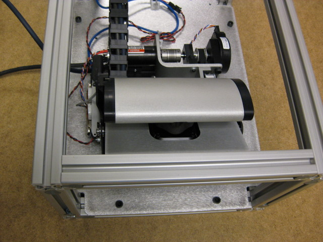
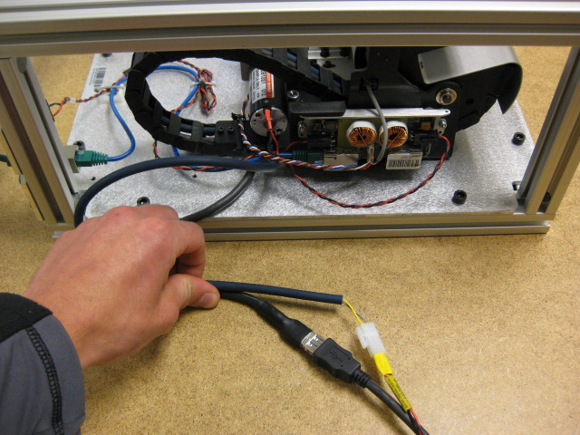

Install the sled in the test fixture, and secure the power/etherCAT from the test fixture into the sled. Use four bolts to attach the sled.
Connect the sled to the test cart's power cable using the attached female power cable. Connect the EtherCAT to the test cart connection using the M-to-M RJ-45 adapter.
Make sure the Hokuyo laser scanner is installed before running this test. The scanner's power and USB cables should be plugged in directly to the computer.
Press 'Continue' to proceed.